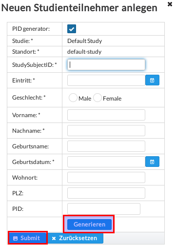
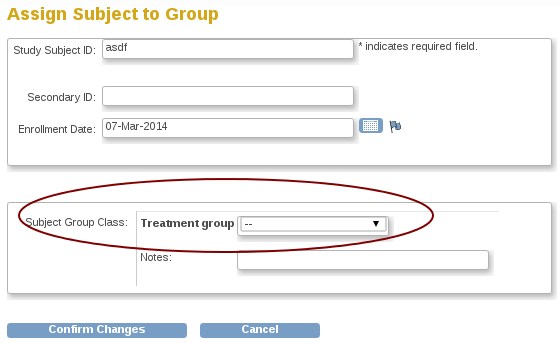

Abbildung 1: RPB Hauptseite
RadPlanBio platform (RPB) ist eine Web-basierte Software zum Austausch und Teilen von Forschungsdaten über medizinische Krebsbehandlung, um multizentrische Studien zu ermöglichen. Der Grundgedanke dahinter ist die Studienverwaltung und elektronische Datenerfassungssysteme, mit Erweiterungen zum sicheren Hochladen von DICOM-Daten, bereitzustellen.
Der Zugriff erfolgt über die RPB-Homepage. Wenn kein Link zu dieser Seite vorhanden ist, wenden sie sich an den lokalen RPB-Administrator.
Zum Anmeldefenster gelangt man über die hervorgehobenen Links in Abb.: 1.
Hinweis: RPB ermöglicht verschiedene Authentifizierungen. Als Standard ist der Zugang über OpenClinica-Anmeldung konfiguriert. Mit der Anmeldung über OpenClinica hat man Zugriff auf alle Funktionen von RPB.
In RPB arbeitet man meistens mit einer bestimmten Studie für einen bestimmten Standort. Die Aktuelle Studienauswahl sieht man über dem Hauptmenü auf der linken Seite. Zum Ändern der aktuellen Studie drückt man auf den Namen der aktuellen Studie (siehe Abb.: 3) im Kopfmenü und anschließend auf Studie/Standort wechseln. Man gelangt zu der Studienübersicht, wo man eine andere auswählen kann (siehe Abb.: 2.1).
RPB nutzt ein einfaches Modul zum Anzeigen von Neuigkeiten. Hier werden Informationen über Veränderungen und
Wartungen angekündigt. Man gelangt über die Homepage mit einem klick auf Startseite (Hauptmenü) zu diesem Modul.
Hinweis: Es gibt einen Link zur RSS-Quelle in der Fußzeile, womit man die Neuigkeiten auch in ein beliebiges RSS-Programm
übermitteln kann.
Die Abmeldung erfolgt über Ausloggen auf der rechten, oberen Seite.
Die RPB-portal-Seite ist in folgende Teile untergliedert (siehe Abb.: 4): Kopfzeile - a), Kopfmenü - b), Hauptmenü (links) - c), Hauptteil - d), Fußzeile - e).
Die Kopfzeile enthält (von links nach rechts):
Das Kopfmenü besteht aus:
Je nach Berechtigungen des Nutzers besteht das Hauptmenü aus folgenden Punkten:
Im Haupteil werden die Informationen zum gewählten Hauptmenüpunkt angezeigt.
Die Fußzeile enthält:
Each user of RPB platform is assigned a dedicated user account. Logged user is able to access his/ her user profile by clicking on user account name link in a header location of portal page. The profile view (Fig. 5) provides overview of user account details with assigned RPB user roles and filtered audit logs.
Das EDC-Modul ermöglicht die Integration von OpenClinica zum Verwalten von Studiendaten. Mit dem Modul erhält man eine Übersicht von Studien sowie Informationen zu Patienten dieser Studien und die Möglichkeit neue Patienten für eine Studie zu registrieren.
Um die Studien im RPB einzusehen, wählt man im Hauptmenü des Portals Studienteilnehmer/Ereignisse (siehe Abb.: 6).
Zugriff auf Studien:
Um eine andere Studie als aktuell auszuwählen folgt man den Schritten aus Abschnitt 2.1 und setzt die gewählte Studie über die Schaltfläche mit dem Stern als aktuell (Abb.: 6).
Über die Schaltfäche Studienteilnehmer (Abb.: 7) werden alle Patienten angezeigt, die dieser Studie zugeordnet sind.
In RPB gibt es folgende ID-Typen zum Identifizieren von Patienten:
Um einen Patienten zu einer Studie hinzuzufügen, klickt man auf die Schaltfläche Neu. Hierzu werden einige Informationen
zum Patienten benötigt (Abb.: 8). Mit diesen Informationen wird über die Schaltfläche Generieren überprüft, ob der Patient
(PID) bereits im RPB vorhanden ist und wenn nicht neu angelegt. Nachdem bei Generated patient PID die PID angezeigt
wird, wird der Patient über Submit der Studie hinzugefügt.
Hinweis: Die optionalen Felder sollten, sofern vorhanden, ebenfalls ausgefüllt werden, um die PID und somit den Patienten genauer zu bestimmen.
 Registrierung eines Patienten für eine Studie.
Wenn der Patient für die Studie registriert wurde, kann man Informationen zum Patienten über die Schaltfläche Ausgewählten Studienteilnehmer bearbeiten mit der Schaltfläche Identifizieren erhalten (siehe Abb.: 8).
Der Reiter Ereignisse zeigt eine Tabelle aller durchgeführten und geplanten Ereignisse des Patienten für die Studie.
Der Zugriff auf das EDC von OpenClinica erfolgt über den Link Data-Capture öffnen im Hauptmenü auf der linken Seite.
By clicking on Participate öffnen link in the main menu at the lef side of the page, you can directly navigate to RPB participate system for mobile data entry.
RPB portal randomisation module can be used to randomise subjects into treatment arms according to defined set of stratification criteria. The module is available only for those clinical trials which have been configured as randomised.
Once you enter the randomisation module you will be able to see the list of currently registered study subject within your active study as displayed in Figure 9. The user can distinguish whether the subject was already randomised by examining his treatment arm property.
For non randomised subjects the command button at the right side of each subject data row will trigger dialogue allowing to enter necessary stratification criteria for the randomisation process, see Figure 10.
After clicking on assign random treatment arm button, the randomisation takes place and assign one of possible study treatment arms to the subject. After this step the treatment arm for subject is stored within RPB. In the current version of RPB it is however still necessary to manually copy this information into OpenClinica EDC system. Within OpenClinica there are two solutions for how the treatment arm of the patient can be stored:
 Randomised treatment arm as study subject group in EDC.
The choice which option to use (even both of them could be used together) depends on a concrete setup of randomised clinical trial.
RPB besitzt ein PACS-Modul, um alle studienrelevante DICOM-Daten auf den PACS-Server hochzuladen. Zur Zuordung der Bilddaten, Studiendaten und der Patienten Identifikation nutzt RPB folgende Informationen:
Diese beiden Information werden im Berichtsformular vermerkt, sodass die Daten von RPB und PACS genau zugeordnet
werden können.
Hinweis: Ersetzen und Speichern dieser Informationen geschieht automatisch.
Zugriff auf gespeicherte Bilddaten gibt es über den Menüpunkt DICOM studies. Hier hat man eine übersicht über DICOM-Studien (Abb. 12) und Serien innerhalb der Studien. Die DICOM-Daten können heruntergeladen oder mit dem integrierten DICOM-Viewer betrachtet werden.
Über das RPB PID-Modul kann man sicher auf Informationen des RPB Patientenidentifikationsverwaltungssystem zugreifen. Im Abschnitt 2.2.2 wurde beschrieben, wie eine neue PID generiert und ein neuer Patient als Teilnehmer einer medizinischen Studie registriert wird.
Jede PID ist eindeutig mit einem Patienten verbunden. RPB nutzt diese ID um Patienten zu pseudonymisieren, d. h. persönliche Daten des Patienten werden nur einmalig gespeichert und für sämtliche Anwendungen im RPB ist die PID ausreichend.
Im Hauptmenü gibt es einen Unterpunkt Search patient PID, um die PID eines Patienten zu ermitteln, falls benötigt (siehe Abb. 13).
This section provides some generic but usefull information about a specific usage of RadPlanBio.
Some studies in RadPlanBio require for the partner site a testing DICOM imaging or treatment plan upload before it can join the real study data collection. For such reason every partner site has an access to the Demo Study where such testing procedures can be performed. The whole process of DICOM upload for a dummy patient consists of three steps which are described in details below: